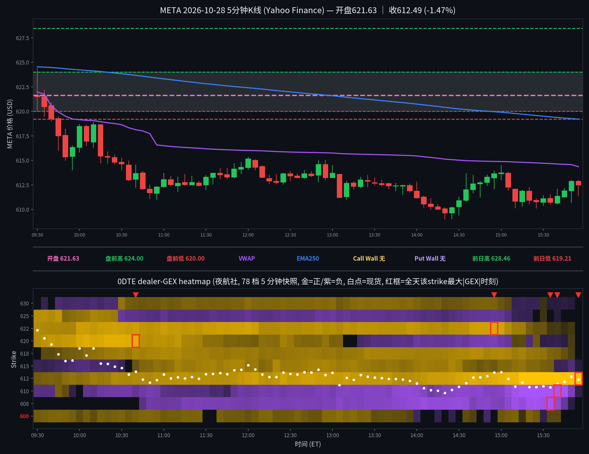

META 日内报告
2026年10月28日 · 周三 · 日内报告
早盘分析
（Junk-man 早盘简报未抓取到，留空待补）
（待补充 Junk-man 当日 #junkman-analysis 原文）
5 分钟 K 线 × 0DTE heatmap
0DTE（2026-10-28到期），夜航社 78 档 5 分钟快照；白点为每档现货位置

heatmap解读（0DTE（2026-10-28到期），夜航社 78 档 5 分钟快照）
GEX 地形图（0DTE（2026-10-28到期），夜航社 78 档 5 分钟快照）：金色=正 gamma 区（做市商对冲减速带/墙），紫色=负 gamma 区（加速带）。白点为每档现货位置。
- 金色带（15:50有效收盘帧）：612.5(+117.2M，收盘 king)/617.5(+0.7M)/620(+0.4M)/622.5(+0.2M)；现价 ±5 点内 612.5 单点独大，正 gamma 高度集中
- 紫色带（15:50有效收盘帧）：610(-17.9M，已自 -59.0M 峰值释放)/615(-4.2M)；负 gamma 稀薄、无成型加速带
- 全天最大节点（有效帧≤15:50）：612.5(+117.2M@15:50)、610(-59.0M@15:40)、607.5(-40.3M@15:35)、620(+30.3M@10:20)、622.5(+26.5M@14:55)；另 15:55 塌陷帧 612.5 +289.4M（仅 3 个 cell）不计入
- 结构特点：总 gamma 开盘 +63.7M → 15:30 -20.1M → 15:50 +96.4M（612.5 单点主导）；上午 620/622.5/625 正带午后瓦解（625 09:45 +19.6M 峰值后 10:30 翻负），午后价格逐级下移至 610–612.5 区，尾盘 612.5 正节点急剧增厚钉住收盘；收盘价在 VWAP(614.35)下方、EMA250(619.20)下方
全天最大节点 TOP5
一、612.5（收盘钉住承接带）：全天变化——09:30 +3.9M → 10:30 +14.9M → 12:00 +22.4M → 15:00 +31.6M → 15:30 +48.0M → 15:45 +79.5M → 15:50 +117.2M 峰值；影响时段——午后现货磨向 612.5 的过程中逐级增厚（15:00 起约 3.7 倍），15:50 现货 612.87 正钉在其上；影响方式——收盘 king：尾盘价格被吸住钉在 612.5 一带收盘（收 612.49）；注：15:55 帧仅剩 3 个 cell（到期塌陷），612.5 跳至 +289.4M 为单节值，不作常规墙位读数。
二、610（尾盘下方加速带，峰值后释放）：全天变化——09:30 -6.0M → 12:00 -11.0M → 14:00 -26.8M → 15:30 -46.7M → 15:40 -59.0M 峰值 → 15:50 -17.9M（释放）；影响时段——15:30–15:40 现货 610.97–611.45 在其上方，负值逐档加深；影响方式——尾盘主加速带，但 15:50 快速释放后价格并未跌穿 610（收 612.49），加速未兑现为下破；另：全天低 609.00（14:20）曾短暂跌穿 610，当时 610 负值约 -27M 量级，14:35 起价格收回 612 一带。
三、607.5（尾盘次级负簇）：全天变化——10:45 首现 -6.3M → 12:00 -14.0M → 14:00 -28.9M → 15:30 -36.7M → 15:35 -40.3M 峰值 → 15:45 -10.2M → 15:50 -0.1M（释放殆尽）；影响时段——15:30–15:35 现货 610.97–610.73 在其上方约 3 点处；影响方式——与 610 组成尾盘下方负簇（合计峰值约 -99M），但两者同在 15:50 前释放，价格收盘仍钉在 612.5，未被拖向 607.5。
四、620（上午正节点，午后翻负瓦解）：全天变化——09:30 +16.1M → 10:20 +30.3M 峰值（现货 615.42 在其下方）→ 12:00 +4.6M → 14:00 -11.9M（翻负）→ 15:50 +0.4M（衰减殆尽）；影响时段——上午价格在其下方 615–619 磨时 620 为上方正带，但价格 09:40 起已收盘跌破 620（收 619.25），620 从未被重新站上；影响方式——上午的正带成型与价格下移同步，午后翻负后彻底失去承接/压制意义。
五、622.5（全天长期正带，尾盘骤衰）：全天变化——09:30 +16.5M → 12:00 +25.2M → 14:55 +26.5M 峰值（现货 613.72 在其下方）→ 15:30 +2.8M → 15:50 +0.2M；影响时段——上午至午后长期维持 20M 上方，但价格距其约 9 点、全天除首根外再未靠近；影响方式——远端正带：只作上方背景，15:30 后随价格远离与到期临近快速衰减至零，未起上行作用。
亮度口径：p99 截断做上限；红框 = 全天该 strike 最大 |GEX| 时刻；TOP5 排名以 15:50 有效帧为准，15:55 到期塌陷帧不计入排名。
资金流（0DTE到期2026-10-28，2笔；premium≥$20万｜size≥50｜DTE≤1｜side=B/M/A）
| 时间 | Strike | C/P | DTE | Fill | Bid/Ask | Side | Size | Prem | Vol | OI |
|---|---|---|---|---|---|---|---|---|---|---|
| 15:43:04 | 550.0 | CALL | 0 | $61.50 | 61.50 / 64.20 | BID | 50 | $0.307M | 196 | 12 |
| 15:46:14 | 550.0 | CALL | 0 | $61.50 | 61.50 / 64.10 | BID | 50 | $0.307M | 246 | 12 |
原始 104 笔中仅 2 笔通过 DTE≤1（其余为远期到期，被正确过滤）；2 笔均为尾盘深实值 C550 at_bid，合计 $0.615M：15:43 与 15:46 各 50 张、$0.3075M，现货约 611.5、行权 550，成交均价 61.50 恰等于内在价值（611.5-550），时间价值≈0，应为到期前平仓/了结而非方向押注；名义口径（call bid）记偏空，但不成方向证据。无 mid 单。今日 DTE≤1 大单极度稀少，FOMC 决议日观望所致。
分析总结
价格行为 × 0DTE GEX 结构复盘
① 开盘 621.63（官方），全天 609.00–624.42，收 612.49（-1.23% vs 昨收 620.12；收开差 -9.14）。事件日（FOMC 14:00 决议＋14:30 记者会，无 SEP/点阵图；盘后 MSFT＋GOOGL 财报，周四开盘有 gap 风险；按 lib 口径 heatmap 只看方向、精确点位不可信）。
② 白点轨迹：开 621.63 → 首根 5m 高 624.42（小幅越过盘前高 624.00）后收 621.50 → 09:40 收 619.25 跌破盘前低 620.00 → 09:45 收 617.50 跌破前日低 619.21 → 午间 613–615 磨 → 14:00 决议后下探，14:20 低 609.00（全天低，短暂跌穿 610）→ 14:35 起收回 612 一带（15:00 收 613.73）→ 尾盘回落至 610–613 → 收 612.49 钉在 612.5 一带。盘前高 624.00 仅首根短暂越过、盘前低 620.00 开盘 10 分钟即收盘跌破。
③ 结构：开盘总 gamma +63.7M → 15:30 -20.1M → 15:50 +96.4M（612.5 单点主导）；上午 620/622.5/625 正带午后瓦解，午后 610/607.5 负簇 15:35–15:40 见顶（合计约 -99M）后 15:50 前释放，价格未被拖向 607.5，反被增厚的 612.5（+117.2M）钉住收盘。
④ Junk-man 简报未验证（见 junkman 字段）：当日无独立 META 简报消息，墙位记 null；收盘算法关键位见明日预测（算法值，非简报墙；且今日 0DTE 已到期，不作明日墙位）。
⑤ 收盘在 VWAP 下方（VWAP 614.35）/ EMA250 下方（EMA250 619.20）。
K线=Yahoo Finance 5分钟；heatmap=夜航社 dealer-GEX 5分钟快照；heatmap亮度=平方根连续渐变（p99裁剪）。
收盘后的静态快照；页面不在打开时更新行情。